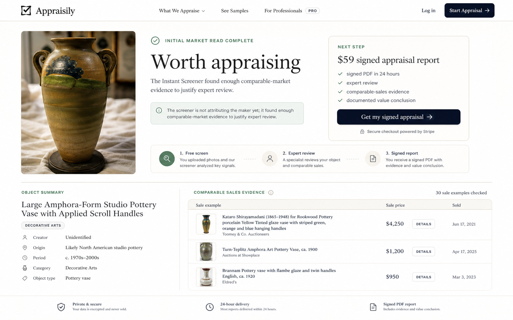
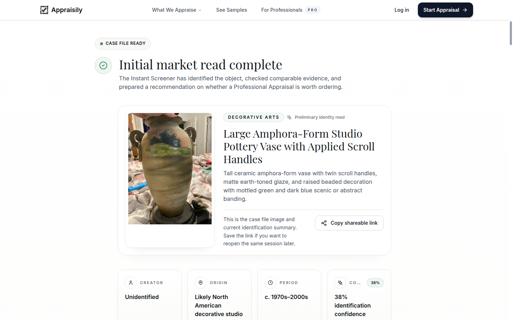
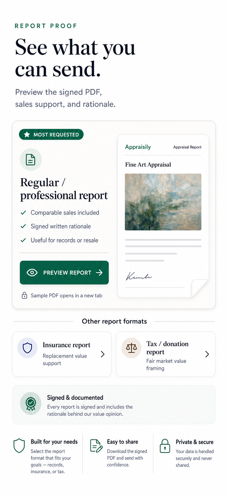
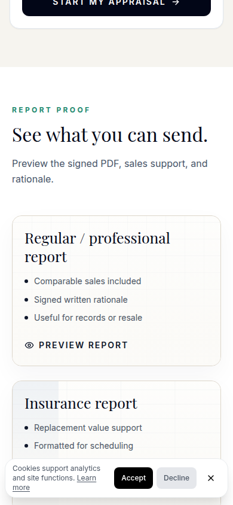
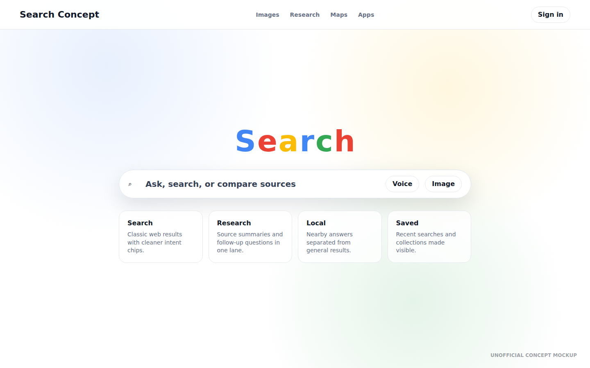
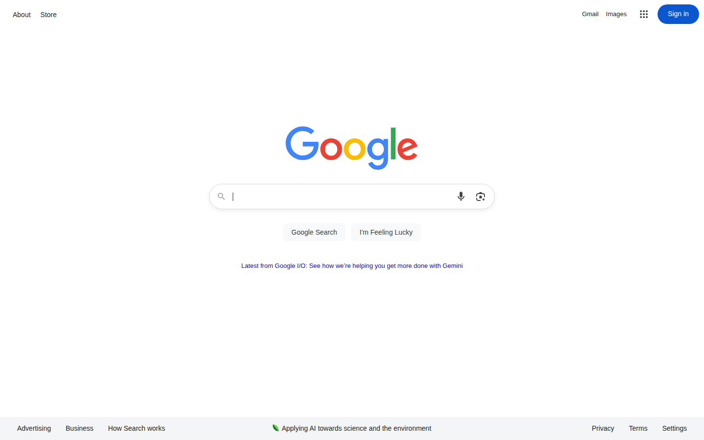
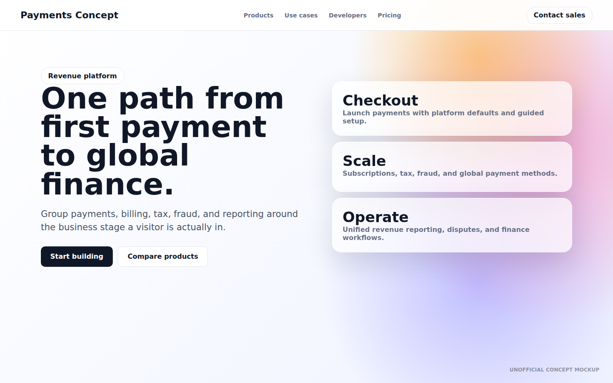
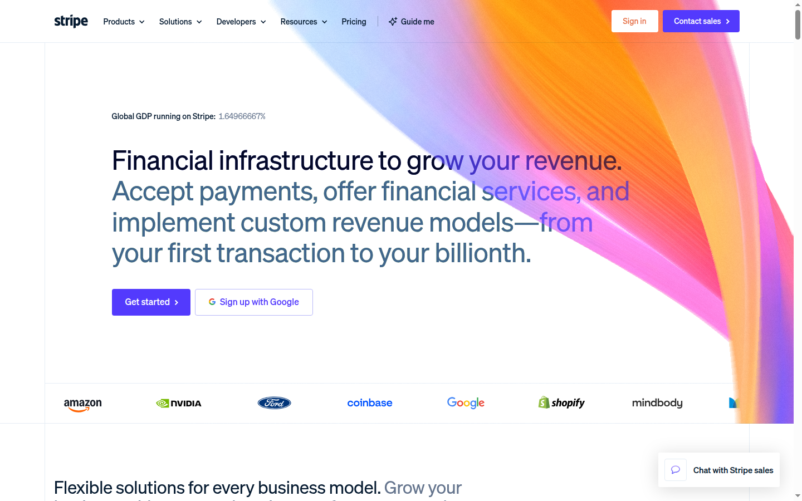

These examples show the loop in action: capture a real page state, generate a stronger GUI direction, then compare the original and mockup with a draggable slider.
Why it helpsVisitors can see what they receive before committing to the order flow.
Implementation scopeMostly layout, spacing, proof module, and CTA treatment.
Screener result page
A result-page pass focused on turning a dense answer into a cleaner decision screen with stronger next-step confidence.
Result UX


BeforeAfter
What changedCleaner result summary, stronger evidence grouping, clearer upgrade action.
Why it helpsThe visitor can understand the answer and the paid next step in one scan.
Implementation scopeInformation hierarchy, cards, sticky action, and summary copy structure.
Mobile section pass
A mobile-specific pass that compresses the same proof idea into a tighter, more thumb-friendly layout.
Mobile


BeforeAfter
What changedMore compact proof path with better top-of-screen prioritization.
Why it helpsSmall screens need fewer competing blocks and a more obvious continuation.
Implementation scopeMobile stacking, spacing, image treatment, and sticky CTA behavior.
Public website practice examples.
These are unofficial design-practice examples using screenshots from well-known public websites. The after side is a neutral concept mockup for demonstrating the loop, not an endorsed redesign or a production screen.
Google.com search homepage
A homepage exercise focused on preserving a direct search moment while testing clearer secondary paths for research, local intent, and saved work.
Public URL


BeforeAfter
Stripe.com landing hero
A SaaS landing-page exercise that turns a broad product message into stage-based pathways for checkout, scaling, and revenue operations.
Public URL


BeforeAfter
News homepage scan path
An editorial homepage exercise that separates the lead story, morning brief, topic following, and return-reader paths.